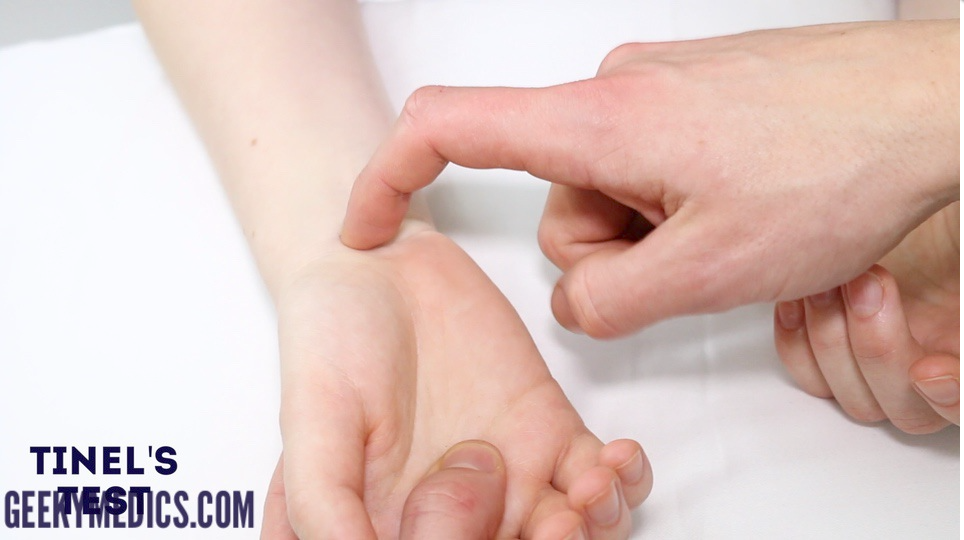

Hand and Wrist checklist
Rules:
- Look, feel and move :)
- We don’t say abnormal until we compare right and left!
WIPPER and the intro
Vital signs:
Look
Look at the palm, dorsum, lateral sides of the hands and in between fingers.
Look at the patient’s elbow
Feel
Move
Nerves
Median nerve
Ulnar nerve
Ulnar - abduction testing
Scissoring
Radial nerve
Carpal tunnel syndrome (3 tests);
Carpal Compression Test (most sensitive); compress with your thumb the position of the median nerve (Proximal to the distal hand crease) for 1 minute, this should (If the nerve is compressed) trigger the compression thus causing signs of carpal tunnel syndrome (Pain, Paresthesia and Numbness on the lateral 3.5 fingers) aka Durkan’s test
Tinel’s test; tap the position of the median nerve (Proximal to the distal hand crease) for 1 minute, this should (If the nerve is compressed) trigger the compression thus causing signs of carpal tunnel syndrome (Pain, Paresthesia and Numbness on the lateral 3.5 fingers)

- Phalen’s test; (Reverse prayer) for 1 minute, a positive test again will produce symptoms of carpal tunnel syndrome (Pain, Paresthesia and Numbness on the lateral 3.5 fingers)
End your exam by: